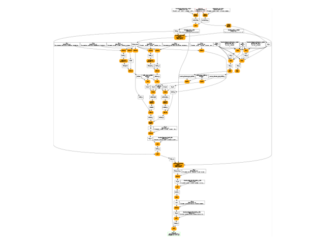

Note
Go to the end to download the full example code.
Dumps intermediate results of a torch model¶
Looking for discrepancies is quickly annoying. Discrepancies
come from two results obtained with the same models
implemented in two different ways, pytorch and onnx.
Models are big so where do they come from? That’s the
unavoidable question. Unless there is an obvious reason,
the only way is to compare intermediate outputs alon the computation.
The first step into that direction is to dump the intermediate results
coming from pytorch.
We use onnx_diagnostic.helpers.torch_helper.steal_forward() for that.
A simple LLM Model¶
See onnx_diagnostic.helpers.torch_helper.dummy_llm()
for its definition. It is mostly used for unit test or example.
import numpy as np
import pandas
import onnx
import torch
import onnxruntime
from onnx_array_api.plotting.graphviz_helper import plot_dot
from onnx_diagnostic import doc
from onnx_diagnostic.helpers import max_diff, string_diff, string_type
from onnx_diagnostic.helpers.torch_helper import dummy_llm, steal_forward
from onnx_diagnostic.helpers.mini_onnx_builder import create_input_tensors_from_onnx_model
from onnx_diagnostic.reference import OnnxruntimeEvaluator, ReportResultComparison
model, inputs, ds = dummy_llm(dynamic_shapes=True)
We use float16.
model = model.to(torch.float16)
Let’s check.
print(f"type(model)={type(model)}")
print(f"inputs={string_type(inputs, with_shape=True)}")
print(f"ds={string_type(ds, with_shape=True)}")
type(model)=<class 'onnx_diagnostic.helpers.torch_helper.dummy_llm.<locals>.LLM'>
inputs=(T7s2x30,)
ds=dict(input_ids:{0:Dim(batch),1:Dim(length)})
It contains the following submodules.
for name, mod in model.named_modules():
print(f"- {name}: {type(mod)}")
- : <class 'onnx_diagnostic.helpers.torch_helper.dummy_llm.<locals>.LLM'>
- embedding: <class 'onnx_diagnostic.helpers.torch_helper.dummy_llm.<locals>.Embedding'>
- embedding.embedding: <class 'torch.nn.modules.sparse.Embedding'>
- embedding.pe: <class 'torch.nn.modules.sparse.Embedding'>
- decoder: <class 'onnx_diagnostic.helpers.torch_helper.dummy_llm.<locals>.DecoderLayer'>
- decoder.attention: <class 'onnx_diagnostic.helpers.torch_helper.dummy_llm.<locals>.MultiAttentionBlock'>
- decoder.attention.attention: <class 'torch.nn.modules.container.ModuleList'>
- decoder.attention.attention.0: <class 'onnx_diagnostic.helpers.torch_helper.dummy_llm.<locals>.AttentionBlock'>
- decoder.attention.attention.0.query: <class 'torch.nn.modules.linear.Linear'>
- decoder.attention.attention.0.key: <class 'torch.nn.modules.linear.Linear'>
- decoder.attention.attention.0.value: <class 'torch.nn.modules.linear.Linear'>
- decoder.attention.attention.1: <class 'onnx_diagnostic.helpers.torch_helper.dummy_llm.<locals>.AttentionBlock'>
- decoder.attention.attention.1.query: <class 'torch.nn.modules.linear.Linear'>
- decoder.attention.attention.1.key: <class 'torch.nn.modules.linear.Linear'>
- decoder.attention.attention.1.value: <class 'torch.nn.modules.linear.Linear'>
- decoder.attention.linear: <class 'torch.nn.modules.linear.Linear'>
- decoder.feed_forward: <class 'onnx_diagnostic.helpers.torch_helper.dummy_llm.<locals>.FeedForward'>
- decoder.feed_forward.linear_1: <class 'torch.nn.modules.linear.Linear'>
- decoder.feed_forward.relu: <class 'torch.nn.modules.activation.ReLU'>
- decoder.feed_forward.linear_2: <class 'torch.nn.modules.linear.Linear'>
- decoder.norm_1: <class 'torch.nn.modules.normalization.LayerNorm'>
- decoder.norm_2: <class 'torch.nn.modules.normalization.LayerNorm'>
Steal and dump the output of submodules¶
The following context spies on the intermediate results for the following module and submodules. It stores in one onnx file all the input/output for those.
with steal_forward(
[
("model", model),
("model.decoder", model.decoder),
("model.decoder.attention", model.decoder.attention),
("model.decoder.feed_forward", model.decoder.feed_forward),
("model.decoder.norm_1", model.decoder.norm_1),
("model.decoder.norm_2", model.decoder.norm_2),
],
dump_file="plot_dump_intermediate_results.inputs.onnx",
verbose=1,
storage_limit=2**28,
):
expected = model(*inputs)
+model -- stolen forward for class LLM -- iteration 0
<- args=(T7s2x30,) --- kwargs={}
+model.decoder -- stolen forward for class DecoderLayer -- iteration 0
<- args=(T10s2x30x16,) --- kwargs={}
+model.decoder.norm_1 -- stolen forward for class LayerNorm -- iteration 0
<- args=(T10s2x30x16,) --- kwargs={}
-> T10s2x30x16
-model.decoder.norm_1.
-- stores key=('model.decoder.norm_1', 0), size 1Kb -- T10s2x30x16
+model.decoder.attention -- stolen forward for class MultiAttentionBlock -- iteration 0
<- args=(T10s2x30x16,) --- kwargs={}
-> T10s2x30x16
-model.decoder.attention.
-- stores key=('model.decoder.attention', 0), size 1Kb -- T10s2x30x16
+model.decoder.norm_2 -- stolen forward for class LayerNorm -- iteration 0
<- args=(T10s2x30x16,) --- kwargs={}
-> T10s2x30x16
-model.decoder.norm_2.
-- stores key=('model.decoder.norm_2', 0), size 1Kb -- T10s2x30x16
+model.decoder.feed_forward -- stolen forward for class FeedForward -- iteration 0
<- args=(T10s2x30x16,) --- kwargs={}
-> T10s2x30x16
-model.decoder.feed_forward.
-- stores key=('model.decoder.feed_forward', 0), size 1Kb -- T10s2x30x16
-> T10s2x30x16
-model.decoder.
-- stores key=('model.decoder', 0), size 1Kb -- T10s2x30x16
-> T10s2x30x16
-model.
-- stores key=('model', 0), size 1Kb -- T10s2x30x16
-- gather stored 12 objects, size=0 Mb
-- dumps stored objects
-- done dump stored objects
Restores saved inputs/outputs¶
All the intermediate tensors were saved in one unique onnx model,
every tensor is stored in a constant node.
The model can be run with any runtime to restore the inputs
and function create_input_tensors_from_onnx_model
can restore their names.
saved_tensors = create_input_tensors_from_onnx_model(
"plot_dump_intermediate_results.inputs.onnx"
)
for k, v in saved_tensors.items():
print(f"{k} -- {string_type(v, with_shape=True)}")
('model', 0, 'I') -- ((T7s2x30,),{})
('model.decoder', 0, 'I') -- ((T10s2x30x16,),{})
('model.decoder.norm_1', 0, 'I') -- ((T10s2x30x16,),{})
('model.decoder.norm_1', 0, 'O') -- T10s2x30x16
('model.decoder.attention', 0, 'I') -- ((T10s2x30x16,),{})
('model.decoder.attention', 0, 'O') -- T10s2x30x16
('model.decoder.norm_2', 0, 'I') -- ((T10s2x30x16,),{})
('model.decoder.norm_2', 0, 'O') -- T10s2x30x16
('model.decoder.feed_forward', 0, 'I') -- ((T10s2x30x16,),{})
('model.decoder.feed_forward', 0, 'O') -- T10s2x30x16
('model.decoder', 0, 'O') -- T10s2x30x16
('model', 0, 'O') -- T10s2x30x16
Let’s explained the naming convention.
('model.decoder.norm_2', 0, 'I') -- ((T1s2x30x16,),{})
| | |
| | +--> input, the format is args, kwargs
| |
| +--> iteration, 0 means the first time the execution
| went through that module
| it is possible to call multiple times,
| the model to store more
|
+--> the name given to function steal_forward
The same goes for output except 'I' is replaced by 'O'.
('model.decoder.norm_2', 0, 'O') -- T1s2x30x16
This trick can be used to compare intermediate results coming from pytorch to any other implementation of the same model as long as it is possible to map the stored inputs/outputs.
Conversion to ONNX¶
The difficult point is to be able to map the saved intermediate results to intermediate results in ONNX. Let’s create the ONNX model.
ep = torch.export.export(model, inputs, dynamic_shapes=ds)
epo = torch.onnx.export(ep)
epo.optimize()
epo.save("plot_dump_intermediate_results.onnx")
[torch.onnx] Run decomposition...
[torch.onnx] Run decomposition... ✅
[torch.onnx] Translate the graph into ONNX...
[torch.onnx] Translate the graph into ONNX... ✅
Applied 4 of general pattern rewrite rules.
Discrepancies¶
We have a torch model, intermediate results and an ONNX graph equivalent to the torch model. Let’s see how we can check the discrepancies. First the discrepancies of the whole model.
sess = onnxruntime.InferenceSession(
"plot_dump_intermediate_results.onnx", providers=["CPUExecutionProvider"]
)
feeds = dict(
zip([i.name for i in sess.get_inputs()], [t.detach().cpu().numpy() for t in inputs])
)
got = sess.run(None, feeds)
diff = max_diff(expected, got)
print(f"discrepancies torch/ORT: {string_diff(diff)}")
discrepancies torch/ORT: abs=0.00390625, rel=0.01457404912426158, n=960.0,amax=1,23,15
What about intermediate results? Let’s use a runtime still based on onnxruntime running an eager evaluation.
sess_eager = OnnxruntimeEvaluator(
"plot_dump_intermediate_results.onnx",
providers=["CPUExecutionProvider"],
torch_or_numpy=True,
)
feeds_tensor = dict(zip([i.name for i in sess.get_inputs()], inputs))
got = sess_eager.run(None, feeds_tensor)
diff = max_diff(expected, got)
print(f"discrepancies torch/eager ORT: {string_diff(diff)}")
discrepancies torch/eager ORT: abs=0.00390625, rel=0.015361927000122894, n=960.0,amax=0,4,3
They are almost the same. That’s good. Let’s now dig into the intermediate results. They are compared to the outputs stored in saved_tensors during the execution of the model.
baseline = {}
for k, v in saved_tensors.items():
if k[-1] == "I": # inputs are excluded
continue
if isinstance(v, torch.Tensor):
baseline[f"{k[0]}.{k[1]}".replace("model.decoder", "decoder")] = v
report_cmp = ReportResultComparison(baseline)
sess_eager.run(None, feeds_tensor, report_cmp=report_cmp)
[tensor([[[ 0.8198, 1.1338, 0.3103, -1.7012, -1.3838, 1.1348, 0.4194,
0.7764, -0.6079, -1.0195, 0.4019, 0.6250, 0.1746, 0.1104,
2.1875, -0.5737],
[ 0.6309, -0.5352, 0.2458, -1.7324, -0.6973, -1.2412, 1.2100,
1.7451, -2.7949, -1.2793, 2.0117, -1.4062, -0.5732, 1.9521,
1.5801, -0.3081],
[ 0.7227, 0.4595, -2.4473, 2.6680, -1.3916, -0.6494, -0.5938,
-1.9346, 0.7119, 1.3516, -2.3691, 1.5166, 0.2339, -0.3440,
-0.6553, 0.0449],
[-2.6562, -0.1071, 0.0552, 1.0049, 0.8516, 0.2405, -1.5000,
-0.6279, -0.9521, -0.2766, 1.8467, 2.6758, -2.0566, -1.5986,
-1.6172, 0.8906],
[ 1.0352, -1.1221, -0.1914, -4.6172, 1.8154, -0.0226, 0.6968,
-0.9453, 2.5293, 0.5645, -1.2158, -0.8530, 0.5840, -1.0713,
3.5488, -0.7886],
[-2.6816, -0.8311, 1.0713, 0.6782, -2.2109, -0.5405, -0.8599,
-0.8442, 2.1465, -0.3335, -2.3516, 0.8408, -2.5508, 0.5786,
0.7236, -0.3325],
[-0.0574, -3.0801, 0.2119, 0.9976, -0.6123, 0.1715, -1.3145,
-0.6470, 0.4365, -0.1084, -1.8828, -0.0618, 2.4414, 0.4448,
1.3262, -1.2920],
[-1.1504, -0.3352, 1.1738, -1.6846, 2.4141, 0.4648, 0.8740,
0.9746, 0.2539, 0.1118, 2.1426, 1.3545, 1.1035, 0.1990,
-1.1533, 1.7441],
[-0.3994, -0.1873, 0.2104, -1.4385, 0.2372, -2.3223, -0.1758,
0.2698, -0.3770, 2.1055, 0.8877, -0.6147, -0.2151, -0.3005,
-0.8579, 0.2686],
[ 1.9160, -0.6533, -2.0215, 1.4004, 1.4141, -1.6943, -1.3125,
-0.5601, -0.3804, -0.1846, 1.8770, 1.0234, -1.0488, -1.2061,
0.0827, -0.5947],
[-2.6738, -1.0244, 0.8984, -0.7002, -0.9414, -0.6143, 1.2676,
-0.7773, -0.0151, 1.5908, -1.7383, -0.0307, -0.4290, -0.2317,
-0.3997, 2.0156],
[ 0.6973, -1.0322, -2.6113, 1.4727, -2.4219, 1.6523, -0.4644,
-1.6465, 1.6865, -0.6494, -3.3633, 2.5449, -0.1610, 0.9927,
-0.3906, -0.1019],
[-2.2930, -0.9536, 1.4082, 1.3281, -3.2734, -1.7598, 2.4414,
0.7920, 1.5537, 1.8672, -1.3340, -1.8936, -1.0723, -1.7031,
0.5020, -0.1735],
[ 1.6084, 1.3916, 0.2234, -0.7676, -1.2871, -0.0839, -0.5039,
0.7607, -1.7871, -1.7373, 1.8994, -0.3931, 1.4551, -0.9785,
1.1914, 0.8462],
[-1.3750, -3.0898, -1.7256, 0.2861, -1.3760, 0.6479, -0.6729,
-2.0605, -0.6143, 1.4043, -1.4023, -1.9941, -2.1523, -0.0198,
2.4238, 1.3760],
[ 1.2607, 1.0859, -0.0872, 1.5088, 0.2783, 1.5820, -1.4277,
0.0420, -0.6987, -0.0593, -2.1465, 2.2383, 0.5078, -0.3579,
2.1484, -0.5127],
[-3.8008, 0.6235, 0.5884, -0.8242, -1.6152, 2.5312, -1.8838,
-0.7466, -0.8989, -1.2871, 0.1758, 1.4668, 1.4385, 0.2393,
0.1904, -1.7305],
[ 0.5103, 0.5605, -2.1328, -1.8223, -1.2988, -0.1538, 1.4326,
0.6987, -1.9160, -0.4573, 1.2402, -1.4229, 2.6562, -2.7441,
1.9131, 2.7402],
[-2.4551, -3.0586, -2.4102, 1.5205, -2.7734, 1.1250, -0.9766,
1.0889, 1.1689, -2.9668, -0.0295, -2.3359, -0.4941, -2.6523,
1.6406, 1.0449],
[ 0.5527, -0.6143, 0.5684, -1.9209, 0.8838, 0.8545, -0.6177,
1.6543, -1.8965, 0.8315, 0.1190, -0.6333, -1.5391, 0.1782,
0.4622, -0.6265],
[ 1.4238, 1.5703, 0.0516, -0.4023, 0.1167, -2.2090, -0.8213,
2.5605, -0.7563, 1.0479, -1.9600, -1.5107, -0.2493, -2.1406,
1.7852, 1.0098],
[ 2.8086, -1.5381, -0.9932, -0.9053, -1.8252, 0.9048, 2.3906,
0.8809, 1.0879, 0.4485, 1.6426, 1.8232, 0.9824, -2.4453,
0.2773, 1.6465],
[-1.9453, -2.5840, 1.3105, -0.0278, 2.0059, -0.5742, -2.4414,
0.9463, -0.4856, -0.0303, -0.7842, 0.0222, 1.4473, -3.0371,
1.3926, -1.5381],
[-0.9077, 1.2148, 0.5137, 0.8291, 0.4297, -0.2722, 0.7905,
1.5391, -1.0137, -0.0155, -2.0352, 1.4580, 1.1729, -0.1067,
1.3896, -0.1515],
[ 0.5908, -0.7988, -0.3037, 1.4609, -1.3613, 0.0834, 1.3145,
-0.2410, 0.6533, -0.1840, -1.6660, -0.1053, -0.7432, -0.5244,
0.3079, -0.1719],
[-4.3281, 0.9478, -0.6572, 0.2832, 0.6470, 2.0117, 0.9531,
-0.0356, -1.5469, -2.5000, -0.1245, -2.8711, 0.9414, -0.5220,
-2.2871, 0.8975],
[-1.4824, -0.2405, 1.9180, -1.6504, -0.4326, 1.1904, -0.6250,
-1.7168, -0.6274, -0.9780, 3.0762, -1.0723, 0.8657, 0.2100,
1.6572, -0.8184],
[ 0.6816, -0.4143, -1.1094, -3.2910, -0.7441, -2.3750, -0.1072,
1.8594, -0.4292, -0.7256, 2.9043, -1.5371, -1.3643, 1.2139,
2.0254, 1.5488],
[-1.0156, -1.8164, -1.2480, -0.2178, 1.0566, -0.4189, -1.6475,
-0.1698, 0.7959, -0.8447, 1.0977, 1.1123, -2.5430, 2.3789,
2.3438, -1.9375],
[-0.2390, 0.0320, 0.5596, -0.7451, -0.8428, -0.2329, 0.8545,
0.0174, 2.1484, 0.9692, -2.8340, -0.4753, 0.7676, -1.4326,
-1.0283, -2.0879]],
[[-2.7441, -1.5088, -1.0586, -2.2656, -0.1865, -0.2361, 0.9326,
-1.7500, -1.4287, -1.2080, -1.2363, 1.8301, 2.9922, -0.8403,
-1.2861, -0.4233],
[-1.0508, -0.8291, 0.6240, -2.7812, -2.5820, 3.3398, 0.5483,
-0.8545, 0.0833, 1.1377, -3.5898, 1.2197, -3.5215, -0.3687,
-0.4688, 0.4207],
[ 0.8188, 1.0811, -0.4634, -0.1228, -0.2859, 0.2642, 2.0137,
0.4741, 1.4619, 1.7139, -1.2207, -0.8643, 0.9893, -0.9746,
0.2744, 1.6074],
[ 1.3789, 1.6865, 1.6221, -0.2432, -0.2080, 1.5137, 0.8105,
1.2295, -1.7217, 0.3508, 0.4358, -1.7822, -0.3896, -1.5400,
2.3164, -0.3491],
[ 0.2261, 0.5454, 0.4319, 0.7300, 0.5679, 0.0413, 0.3887,
-1.4062, -2.0410, 0.3809, -3.0098, -0.1335, 0.1787, -1.2832,
3.5195, -1.3555],
[-0.2096, -1.1895, 0.4050, -0.9277, -0.5005, 1.3018, 0.4819,
-0.6792, 1.5684, 0.9580, -1.9473, -1.1768, -1.0068, 1.2656,
-0.0138, -2.7344],
[ 0.0515, 0.7329, -1.1016, -1.5625, 1.5791, -3.2461, -0.7959,
3.7129, -1.0176, 1.2422, 1.7480, 1.1660, 1.6973, -0.6777,
0.1270, 0.5620],
[ 1.8086, -0.4880, -0.2600, -1.2031, -0.8408, 0.1288, 0.1013,
1.3623, 0.2520, -3.0898, -3.1289, 1.0127, 0.0533, 1.1826,
0.1267, -0.8477],
[ 0.3184, -0.0495, -0.7944, -1.6689, 0.6133, 0.9282, 1.0303,
1.0664, -1.2607, -3.3340, 0.2074, 1.0527, 1.2305, 1.3018,
-0.3196, -0.5620],
[ 0.1625, 1.5996, 2.2051, -0.9570, 0.6865, -0.1754, -1.5312,
3.5078, 1.0957, 0.7539, 0.0679, 0.9287, -0.0748, 0.0332,
1.7754, -2.4121],
[ 0.2603, 3.6191, 0.7666, -2.8184, -1.7480, -0.6582, 1.4521,
-0.4590, -3.2031, -0.7178, -2.2598, 0.1157, -1.4688, 0.3877,
1.9326, -2.0566],
[-1.4775, 0.2812, -1.8711, 0.9888, 2.3105, 1.4219, -0.8521,
0.5869, -2.3184, -1.8838, 0.6313, 1.0068, -2.1250, 0.8252,
2.3281, -1.8516],
[ 1.9805, -1.0674, 1.1494, -1.3965, 0.8525, -1.3438, -2.4082,
-1.3184, 1.2363, -2.6621, 2.1367, 2.8105, 0.3025, 0.5830,
1.2529, -0.8584],
[-0.5698, 1.0361, -2.7617, 3.1855, -2.2598, 0.5762, 1.0898,
-2.1484, -2.9785, -0.3799, 0.5381, 2.2969, 1.1865, 0.5923,
0.5684, 1.0029],
[-0.4214, 0.6240, 0.0361, 1.2148, 1.1211, 1.5850, -0.6719,
-0.2593, -0.5801, 0.5195, -3.6328, -0.6934, -1.1777, 1.4971,
1.2236, 0.8462],
[-0.3608, -1.5498, -2.0781, 1.2900, 1.1680, -0.2878, -3.3066,
-0.6304, -0.2515, -2.4824, -0.8086, -0.4414, 1.2705, -0.5137,
0.9722, 1.0566],
[ 0.2773, -0.8467, -0.4370, -1.0635, -0.7988, -2.5273, -0.1459,
-0.7832, 2.3125, -0.4131, 0.3799, 1.2246, -0.2812, 1.5254,
3.1504, -0.0317],
[-0.1207, -1.5176, -1.3672, 0.5381, -1.2598, 0.0155, 0.2556,
0.5430, 0.6509, 2.3750, -0.3848, 1.4717, -0.0782, 0.4409,
-0.7861, -0.2512],
[ 3.7539, 0.7461, -2.9141, 0.4319, -1.2178, -1.5459, -0.3191,
2.4004, -0.5850, -4.0156, 0.9111, -2.5801, 0.3970, 0.2078,
-3.0078, -0.3315],
[ 0.2053, -1.6016, -1.3330, -2.2402, -1.2637, -1.1406, -1.7627,
-1.4717, 0.0326, 0.2463, -1.0889, 1.6777, 0.0989, -1.0107,
1.2598, -1.8496],
[-0.5015, 0.3564, -2.8613, 0.8589, 1.0508, 0.6201, 2.0840,
-0.8428, 0.8608, -1.0537, -1.1426, 1.3994, -0.8799, -1.4971,
-3.0488, 1.1484],
[-1.8926, 1.3496, 0.5840, 0.6260, -1.1035, 2.1289, -0.6191,
-1.7812, -0.6104, 0.7197, -0.8779, -0.5469, -0.2957, -1.1445,
1.6465, 0.4431],
[ 0.0248, -0.4209, 0.9912, 1.5254, -0.6255, 2.2988, 0.4736,
-0.6968, 0.6235, 1.1152, -0.2357, 0.2837, -1.7197, -0.9502,
0.7236, -0.2703],
[-0.2256, -3.2539, 0.3733, -0.7051, -0.9424, 0.9399, -0.8384,
2.7012, -1.4102, 2.3652, 2.4395, -0.1726, -0.3997, 2.4414,
-2.7461, 4.3555],
[-0.5273, -0.7627, -1.4727, 0.0089, -0.9038, -0.3931, 0.0165,
2.5234, 0.0560, 2.4824, -0.7568, 2.0273, 0.8208, 0.1750,
-0.4692, -0.0614],
[-0.2482, 0.9697, 0.7930, 2.5312, 0.6304, -2.1934, -0.4207,
-0.3589, 0.6689, -2.9648, 0.6406, 1.5439, -0.9414, -2.5840,
0.5981, -0.5454],
[-0.2947, 1.0303, 0.7432, -1.6426, -1.4053, -1.1924, 0.0084,
0.0693, -0.1831, -1.3076, -1.3193, 0.0496, -0.8823, -0.4551,
-0.4048, 0.8452],
[ 2.7793, -0.6396, -0.3855, -1.1104, 3.5723, -0.6206, 1.0527,
-0.0508, 0.2729, -0.1665, -0.7378, -0.5005, 1.7090, -0.1311,
0.2742, -2.3301],
[-1.2715, 1.4551, -0.9688, -0.0624, -1.2578, 0.0319, -2.5566,
0.9648, 1.9629, -1.7158, -2.1465, 0.9170, 1.5723, 0.1582,
-1.0840, 2.3145],
[ 1.9854, 0.5317, -2.6621, -0.7900, 2.0801, -2.5039, -2.0605,
3.4414, 1.1064, 1.3262, 3.0391, 0.9688, -2.1133, 0.6372,
1.5273, -1.1172]]], dtype=torch.float16)]
Let’s see the results.
data = report_cmp.data
df = pandas.DataFrame(data)
piv = df.pivot(index=("run_index", "run_name"), columns="ref_name", values="abs")
print(piv)
ref_name decoder.0 decoder.attention.0 decoder.feed_forward.0 decoder.norm_1.0 decoder.norm_2.0 model.0
run_index run_name
1 embedding 3.089600 2.758850 2.707031 2.870117 2.861328 3.089600
2 embedding_1 2.763672 3.180786 3.229004 2.381104 2.350342 2.763672
3 add_8 0.923096 4.311035 4.427628 2.318359 2.286133 0.923096
4 layer_norm 2.447266 2.749512 2.904541 0.000000 0.842957 2.447266
5 linear 5.244141 1.756653 1.824707 3.542969 3.623047 5.244141
6 linear_1 4.989990 1.759277 1.753662 3.831055 3.911133 4.989990
7 linear_2 5.119141 1.926025 1.930664 3.762695 3.676758 5.119141
17 matmul_1 4.648224 1.645996 1.687256 2.630554 2.915039 4.648224
18 linear_3 4.729004 2.071198 1.826172 3.388672 3.515625 4.729004
19 linear_4 4.327148 1.880127 1.840912 3.392578 3.400391 4.327148
20 linear_5 4.529297 1.996399 2.105225 3.442383 3.520020 4.529297
30 matmul_3 4.517090 1.299072 1.461060 2.898041 2.912354 4.517090
32 val_48 4.499878 0.171265 1.027710 2.755310 2.763123 4.499878
33 linear_6 4.479004 0.000488 1.124390 2.749512 2.757324 4.479004
34 add_115 0.773438 4.451660 4.568253 2.392578 2.360352 0.773438
35 layer_norm_1 2.415039 2.757324 3.010254 0.842499 0.000977 2.415039
39 val_54 4.676086 1.076782 0.080566 2.873436 2.958008 4.676086
40 linear_8 4.595764 1.124390 0.000488 2.904541 3.010254 4.595764
41 add_136 0.003906 4.475098 4.591690 2.447266 2.415039 0.003906
Let’s clean a little bit.
piv[piv >= 1] = np.nan
print(piv.dropna(axis=0, how="all"))
ref_name decoder.0 decoder.attention.0 decoder.feed_forward.0 decoder.norm_1.0 decoder.norm_2.0 model.0
run_index run_name
3 add_8 0.923096 NaN NaN NaN NaN 0.923096
4 layer_norm NaN NaN NaN 0.000000 0.842957 NaN
32 val_48 NaN 0.171265 NaN NaN NaN NaN
33 linear_6 NaN 0.000488 NaN NaN NaN NaN
34 add_115 0.773438 NaN NaN NaN NaN 0.773438
35 layer_norm_1 NaN NaN NaN 0.842499 0.000977 NaN
39 val_54 NaN NaN 0.080566 NaN NaN NaN
40 linear_8 NaN NaN 0.000488 NaN NaN NaN
41 add_136 0.003906 NaN NaN NaN NaN 0.003906
We can identity which results is mapped to which expected tensor.
Picture of the model¶
doc.plot_legend("steal and dump\nintermediate\nresults", "steal_forward", "blue")
Total running time of the script: (0 minutes 11.033 seconds)
Related examples


Find where a model is failing by running submodels